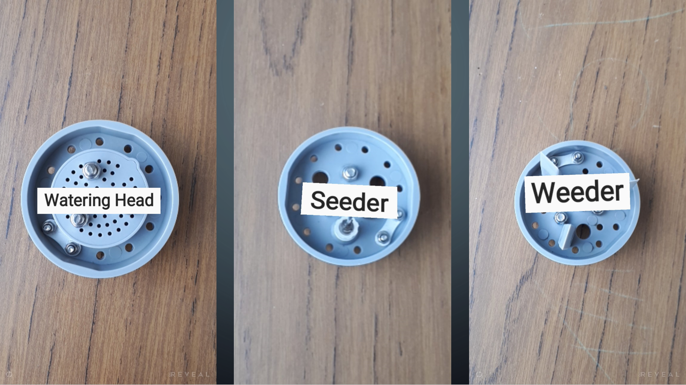
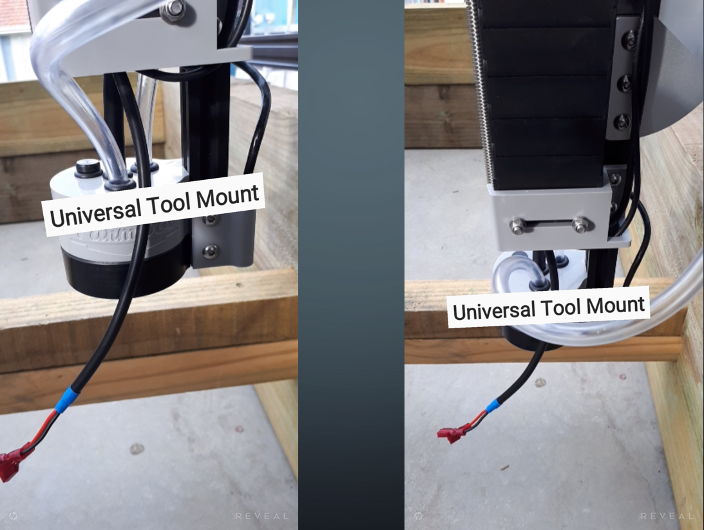

Augmented Reality
Introduction
Augmented reality (AR) is adding something to, or changing the image of, reality viewed through a camera.
When I began my project, I had absolutely no idea what I was going to do, so I spent a few lessons testing out both Metaverse and HP Reveal, making random things with no real purpose. After a while, I realised that there was no way I could get Metaverse to create the kind of AR experience I was aiming for, so I decided to opt for HP Reveal. Because the aim of this project was to create an educational tool that could be used by students, I eventually chose to make an AR experience that would label the different parts of FarmBot. I began by making labels; because I couldn't find an option to add text to the experience, I found the easiest way to do this was type the word in my phone's notepad, then screenshot it. After making a few of these, I took photos of the parts of FarmBot I wanted to identify, and added the labels to these.


I found that quite a few objects, such as the Universal Tool Mount (UTM), needed to be photographed from multiple angles, in order help the program recognise them.
